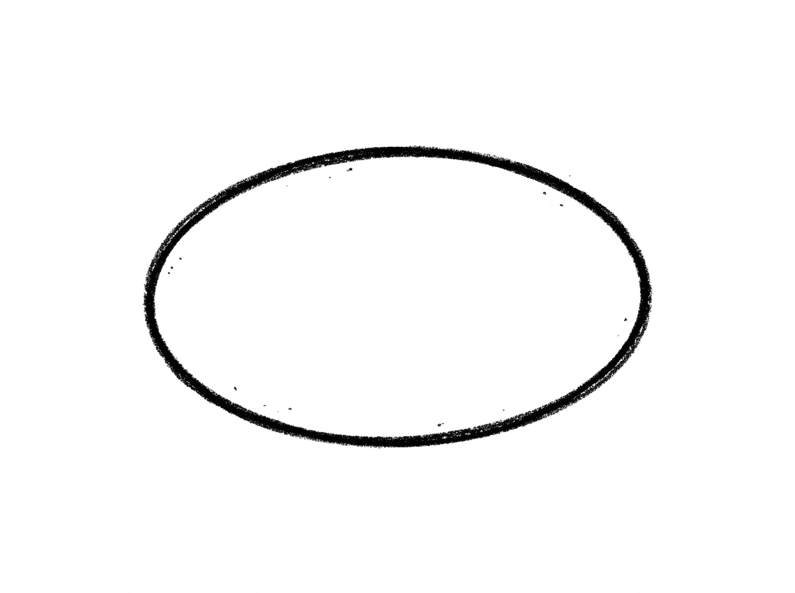
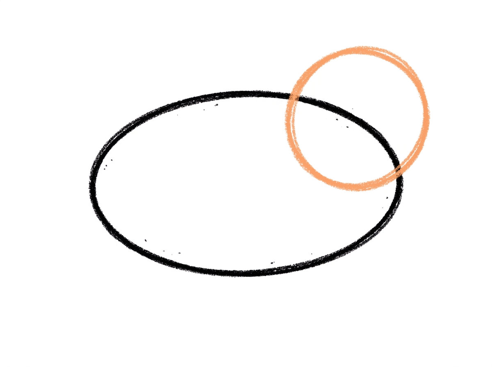
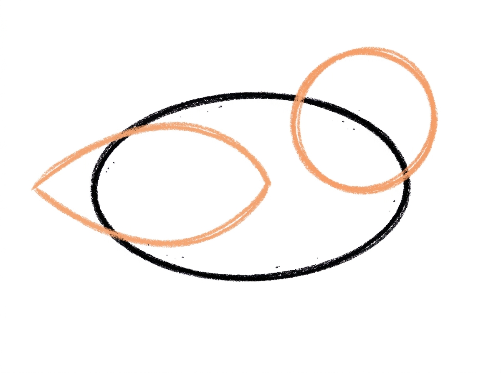
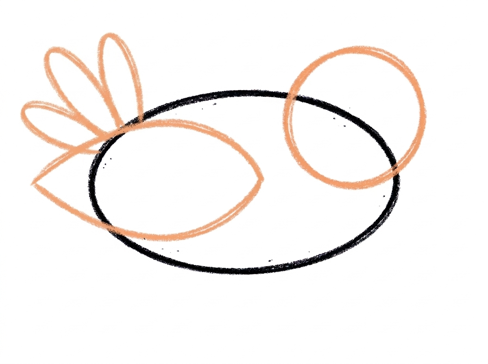
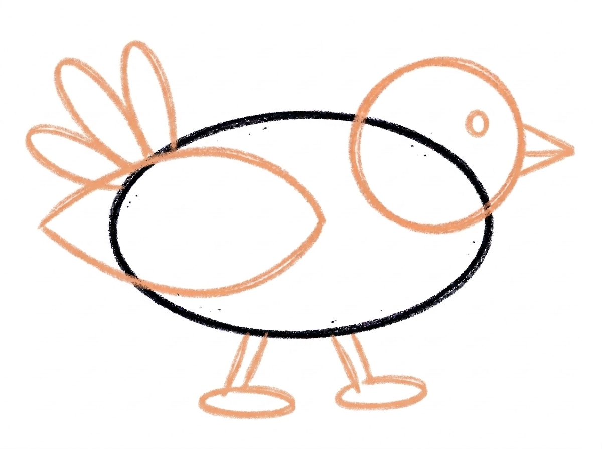

Duck Drawing for Kids How to Draw A Duck in 6 Easy Steps
Quick Answer
Draw a duck in six easy steps: a big sideways oval for the body, a circle for the head, a pointy oval wing, three round tail feathers, then a triangle beak, a dot eye, and two short legs. Color it bright yellow with an orange beak. Made for ages 3 and up — no signup needed, just print and draw.
At a Glance
- Subject: How to draw a duck
- Ages: 3+
- Steps: 6 steps
- Time: ~15 min
- Difficulty: Easy
- Supplies: Paper, crayons
Kids love ducks — they're the friendly faces of every pond visit and storybook farm. This duck drawing is built from shapes little hands already know: one big oval, a circle, a triangle, and a dot, added one at a time until a cheerful duck appears.
✏️ Draw Your Duck in 6 Easy Steps
One step per box — this step by step duck drawing shows each new part in a different color so kids can see exactly what changed.
Step 1: The Body

Draw one big oval lying on its side in the middle of your paper. This long round shape becomes your duck's body.
Step 2: The Head

Add a circle at the front of the body, up high so the two shapes touch and overlap a little. This round shape is your duck's head.
Step 3: The Wing

Draw one big pointy oval across the side of the body for the wing. Start at the back of the body and stretch it toward the middle.
Step 4: The Tail

Add three short, round feathers fanning up from the back of the body. Now your duck has a tail!
Step 5: The Beak, Eye, and Legs

Draw a small flat triangle at the front of the head for the beak, and one round dot for the eye. Then add two short legs under the body, with a flat oval foot at the end of each leg.
Step 6: Color It In

Color your duck! Bright yellow for the body, head, wing, and tail, and orange for the beak, legs, and feet. Great drawing!
📊 Duck Drawing by Age
Every age can join in — just adjust the job.
| Age | What they can do | Tip |
|---|---|---|
| 3-4 | Draw the big body oval and the circle head, and color the finished duck yellow. | Draw the steps big on the page — a large oval is much easier for little hands than a small one. |
| 4-5 | Add the pointy oval wing, the three tail feathers, and the triangle beak with help placing them. | Point to where each new part goes before your child draws it; placement is the tricky part at this age, not the shapes. |
| 6+ | Complete all six steps independently, including the two legs with their flat oval feet. | Challenge older kids to draw a whole row of ducks in different sizes — a mama duck with ducklings behind her. |
🖨️ Download Your Free Duck Drawing Printable
The printable lays out all 6 steps one per box, big enough for little hands — kids draw right alongside each step.
⬇️ Open Free Printable 🖨️ Print🎁 Free printable for ages 3+
🦆 Pond Parade
Once the duck is colored, turn the page into a pond scene: draw wavy lines under the duck for water, add a sun and some grass at the edges, and draw two or three baby ducklings following behind using the same steps in a smaller size. Kids who finish can name their duck and write the name under the picture — early handwriting practice disguised as art time.
What You'll Need to Draw A Duck
You only need a pencil, an eraser, and crayons or markers. For colors, match the tutorial: bright yellow for the body, head, wing, and tail, and orange for the beak, legs, and feet. A sheet of plain printer paper or a sketchbook page both work fine.
What They're Learning
This tutorial practices the shapes that show up again and again in kids' drawing: a big oval for the body, a circle for the head, a smaller pointy oval for the wing, a flat triangle for the beak, and a simple dot for the eye. Children also practice sequencing (one part at a time, in order), placement (front, back, top, and under), and fine-motor control as the shapes get smaller toward the beak and feet.
Make It Yours
Once the basic duck is easy, try these: color it white with a yellow beak for a farm duck, add a bow or a tiny hat on the head circle, draw it swimming by adding wavy water lines across the bottom of the body instead of legs, or flip the whole drawing so the duck faces the other way. A row of ducks in different colors makes a great card for grandparents.
🛒 Our Favorite Drawing Supplies
These are the supplies we reach for in our own home — washable (because kids), quality paper, and enough colors to avoid fights.
As an Amazon Associate, MomYouNeedThis earns from qualifying purchases — at no extra cost to you.
💡 Duck Drawing Tips for Parents
Step 5 is the busiest step — it adds the beak, the eye, and both legs all at once. Slow it down: do the beak first and praise it, then the eye, then the legs one at a time. Splitting one step into three mini-wins keeps a young artist from feeling overwhelmed at the finish line.
The head circle needs to sit up high at the front of the body and overlap it a little. If your child's head floats away from the body, that's completely normal — just show them how the two shapes give each other a little hug. Wobbly ovals are part of the charm at this age, so resist fixing their lines for them.
✏️ Duck Drawing Step by Step
This duck drawing is built around one big sideways oval: the body goes down first, and every other part is placed by where it sits on that oval — head at the front, wing across the side, tail at the back, legs underneath.
That is why the steps add the attaching parts before the details. The head, wing and tail all borrow the body’s outline as their starting edge, so none of them can float in empty space; the beak, eye and legs are drawn last because each one needs its home shape — head or body — already finished underneath it.
Size the body generously. It has to carry a circle head at its front, a pointy oval wing across its whole side and three tail feathers at its back, and a small body makes all three crowd each other. If the oval fills the middle of the page, every later step has room.
See free duck printable for more.
✏️ One Shape Per Step, Six Steps Total
Use this duck drawing’s halfway shapes as check pictures. After the head step, the circle should sit at the front of the body and share an edge with it — part of the circle overlapping the oval, not parked beside it.
After the wing step, the pointy oval should start at the back of the body and reach toward the middle of the side; a wing that starts mid-body leaves the back bare and the duck reads as all front. After the tail step, three separate feathers should fan upward from the back end — if they merge into one blob, the gaps between them were too small.
Before colouring, check the face and feet: beak and eye both on the head, never on the body, and each of the two legs ending in a flat oval foot rather than a point. Then the colour test — yellow belongs to body, head, wing and tail; orange only to beak, legs and feet. Orange on the wing means the map was misread.
See free duck printable for more.
🦆 Duck Face Drawing
The face is where this duck gets its personality, and it's wonderfully simple: one flat triangle for the beak and one round dot for the eye, both on the circle head from step 2. Because the head is a plain circle, the face is a great place to experiment — a bigger dot eye looks surprised, a dot placed higher looks cheerful.
If your child wants just a duck face drawing instead of the whole bird, draw the head circle nice and big, add the triangle beak and dot eye, then finish with a few tail-style feathers on top of the head for a tuft. It's a two-minute drawing that works beautifully on cards and lunchbox notes.
Faces are also a gentle way to talk about feelings: ask your child whether their duck is happy, sleepy, or excited, and let them answer by changing the eye — a dot for awake, a short curved line for sleepy. Drawing emotions on a friendly duck is an easy first step into storytelling through art.
See free duck printable for more.
❓ Duck Drawing FAQs
What is the easiest way to draw a duck?
Start with one big sideways oval for the body, then add one shape at a time: a circle head, a pointy oval wing, three tail feathers, a triangle beak with a dot eye, and two little legs. Following the six steps in order is much easier than trying to draw the whole duck at once.
What age is this duck drawing for?
It's made for ages 3 and up. Younger preschoolers can do the big oval body, circle head, and coloring with a little help, while kids 5 and 6 can usually complete all six steps on their own.
What supplies do we need?
Just a pencil, an eraser, paper, and crayons or markers. You'll want yellow and orange for coloring — yellow for the body, head, wing, and tail, and orange for the beak, legs, and feet.
Is the printable really free?
Yes — every printable on MomYouNeedThis is 100% free, including this duck drawing tutorial. There is no signup, no email, and no catch — just download, print, and draw.
How do I print it?
Open the PDF and choose Print, then set the scale to 100% (sometimes called Actual Size) so the steps print at full size. The tutorial is designed for regular US Letter paper, and plain printer paper works perfectly.
My child's head circle doesn't touch the body. Is that wrong?
Not wrong at all — it's the most common wobble in this tutorial. The head should sit up high at the front of the body and overlap it a little, so just encourage your child to let the two shapes touch like they're giving each other a hug next time.
How do I draw the duck's wing?
The wing is one big pointy oval drawn across the side of the body. Start it at the back of the body and stretch it toward the middle — it doesn't need to be perfect, and a wobbly wing still reads clearly as a wing once the duck is colored.
Can we draw a baby duck too?
Yes — use the exact same six steps, just draw every shape smaller and make the head circle a little bigger compared to the body. A big head on a small body is what makes the duckling look like a baby.
📚 Keep Exploring
- ✏️ All 53 Drawing Tutorials 53 free step-by-step drawing tutorials for kids.
- 🐾 Animal Coloring Free printable animal coloring pages for little learners.
- ✏️ Drawing Practice Free printable drawing pre-writing worksheet for toddlers.